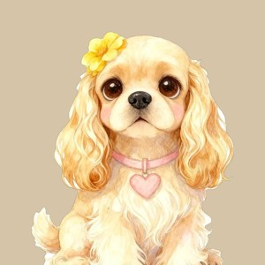

こむぎの1年
2025年11月 ― 2026年10月
出会って365日目のおくりもの
この1年の、こむぎとあなた
214日ひとことを送ってくれた日
86枚届いた写真
301問答えてくれた質問
おさんぽいちばん多く出てきた言葉（41回）
あなたの言葉（届いたまま・書きかえなし）ふりかえり（届いた記録から作った文）
11月はじめての冬じたく
 写真 11/311/1811/29
写真 11/311/1811/29セーター着せたら、固まって動かなくなった11月3日 あなたの言葉
今日は落ち葉の上でごろごろ。帰ったら葉っぱだらけ11月18日 あなたの言葉
ふりかえり11月は「さむい」が4回、「セーター」が2回。冬じたくの話がいちばん多い月でした。
1月いちばん多く届いた月（27日）
写真 1/91/101/24はじめての雪！最初はおそるおそる、すぐ走り回ってた1月9日 あなたの言葉
ふりかえり雪の話が3日。この月の質問「寒い朝のおさんぽは？」の答えは「すぐ出たがる」でした。
4月はじめてのおともだち
写真 4/12 4/124/26
4/124/26公園でモカちゃんと会った。においをかぎあって、ずっといっしょ4月12日 あなたの言葉
ふりかえりワン友帳に、はじめてのおともだち「モカちゃん」が入った日です。
性格は、こう変わりました
1年前いま
ふりかえり「すぐ仲よし」に大きく動きました。ワン友が3匹ふえた年でした。
みんなとくらべると
寝るときのかっこう「まるまり派」は、全体の 18%。
こむぎは少数派でした。
こむぎは少数派でした。
「名前を呼ぶと？」で「しっぽだけ振る」は 9%。
同じパグの中ではいちばん少ない答えです。
同じパグの中ではいちばん少ない答えです。
あなたがいちばん長く書いてくれた日
病院の帰り、ずっとひざの上で寝てた。重たいけど、この重さがうれしい8月21日 あなたの言葉
2年目のアルバムづくりが、今日から始まります。
見本のメモ（お客様には出ません）
- あなたの言葉は、届いたまま入れます（言いかえ・まとめはしません）。手書き風の文字とクリーム色で、ほかの文と分けます。
- 「ふりかえり」は届いた記録の数字と事実だけで作ります。犬の気持ちを想像した文は入れません。
- 写真がない月は、そのページを作りません。
- 届けるのは、お迎え記念日（なければ登録して1年の日）。
ウェブで見る（最初の3ページ）無料ウェブで全部見る480円（案）PDF（保存・印刷用）980円（案）写真集（印刷して届く）3,980円（案）